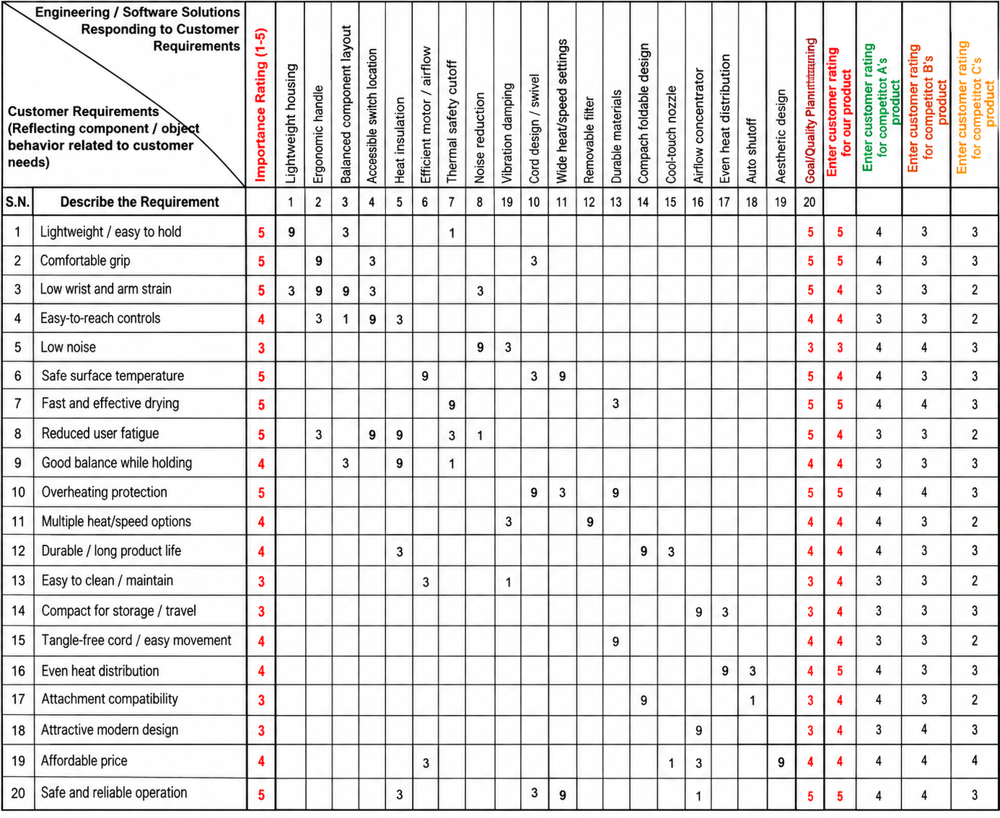
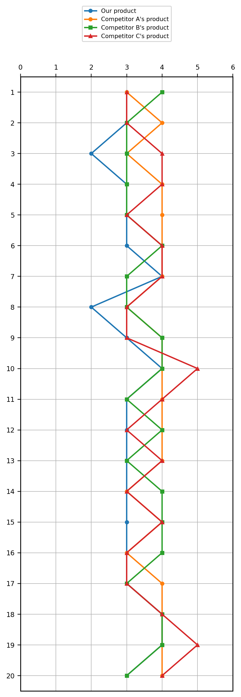
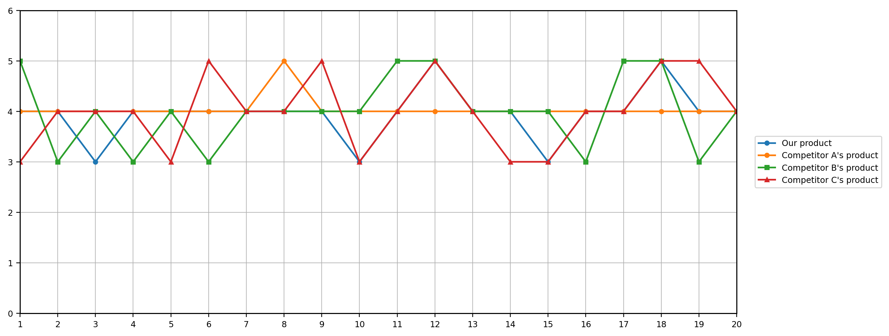
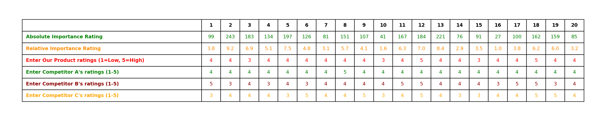

The purpose of this assignment is to use CORA, or Component Oriented Requirements Analysis, to connect customer and ergonomic requirements with engineering design solutions for the BetterUse Engineering handheld hair dryer.

Figure 1. CORA analysis for the BetterUse Engineering handheld hair dryer.

Figure 2. Customer rating comparison between the BetterUse hair dryer and benchmark products.

Figure 3. Engineering solution ratings for the BetterUse hair dryer and benchmark products.

Figure 4. Absolute and relative importance results and engineering benchmark ratings.
For Assignment 2, I used CORA, or Component Oriented Requirements Analysis, to evaluate the ergonomic design of the BetterUse Engineering handheld hair dryer. The purpose of the CORA is to connect customer and human-factor requirements with specific engineering solutions.
The customer requirements include lightweight design, comfortable grip, low wrist and arm strain, easy-to-reach controls, low noise, safe temperature, reduced fatigue, good balance, overheating protection, simple operation, durability, and effective drying. Each requirement was given an importance rating from 1 to 5, where 5 represents a very important customer need.
The engineering solutions include lightweight housing, ergonomic handle, balanced component layout, accessible controls, efficient motor and airflow, heat insulation, thermal safety cutoff, cool-touch materials, swivel cord, vibration reduction, durable housing, and other design features. The relationship between each customer requirement and engineering solution was evaluated using CORA values. A value of 9 represents a strong relationship, 3 represents a medium relationship, 1 represents a weak relationship, and a blank cell means there is no significant relationship.
The CORA also compares our proposed hair dryer with three benchmark products using customer ratings from 1 to 5. These ratings help show where the BetterUse design performs well and where improvement is still needed. The Absolute Importance Rating and Relative Importance Rating identify which engineering solutions have the greatest effect on the most important customer requirements.
The results show that features such as the ergonomic handle, balanced component layout, efficient motor and airflow, heat protection, and safety controls are important design priorities. These features strongly support the main ergonomic goals of reducing wrist and arm strain, lowering user fatigue, improving comfort, maintaining safe temperatures, and providing effective drying performance.
Overall, the CORA analysis shows that the proposed design improvements are aligned with the most important customer and ergonomic requirements. This does not guarantee market success, but it provides a defendable engineering basis for improving the hair dryer and shows which design features should receive the most attention.